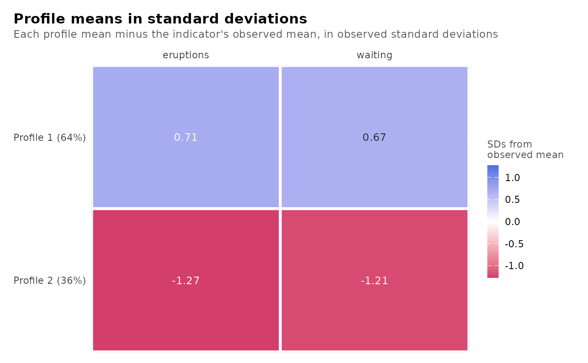
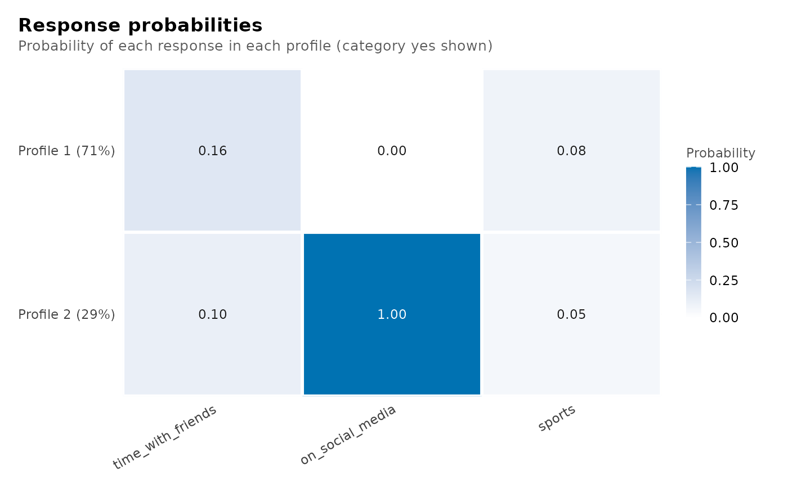
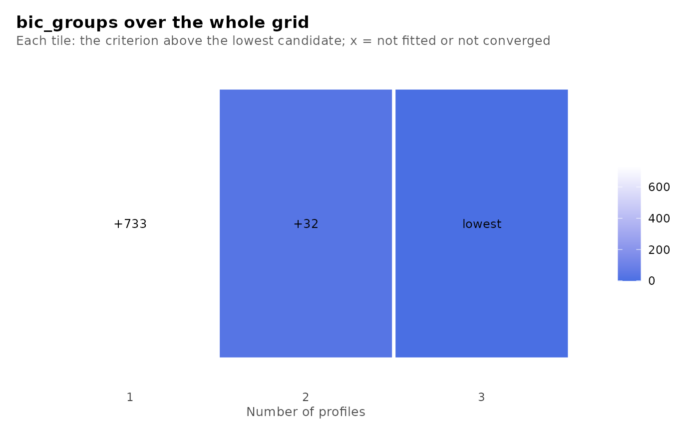

Plot profile means as tiles of profiles by indicators, or a grid's criterion as tiles of candidates
Source:R/wildcards.R
plot_heatmap.Rdplot_heatmap() plots a grid of tiles: for a profile, class or transition
fit, one row per profile and one column per indicator; for an enumeration
grid, one tile per candidate, showing how far its information criterion is
above the lowest.
Arguments
- x
One of:
a profile or class fit from
lpa(),lca(),multilpa()ormultilca(), with or without covariates;a transition fit from
lta()of classmultilpa_transitions. The general transition fits (classmultilpa_lta) have no heat map and are refused;class(x)tells which onelta()returned;an enumeration grid from
enumerate_lpa(),enumerate_lca(),enumerate_classes()orenumerate_regressions(). A grid of group-class families (enumerate_classes(family = )) is refused;a
diagnostics()result, which is drawn from the fit it checked.
- main, subtitle
Title and subtitle of the plot.
NULL(default) keeps the view's own text.
Value
A ggplot object.
Errors:
latents_nothing_to_plotwhen the package returnedxbut this function has no plot of it: an additive or cross-level fit, a mixture regression, a growth mixture, a general transition fit or a grid of group-class families. For an object of the wrong kind, the message names the plot functions that apply to it;latents_not_a_fitwhenxis not a fit, grid or other result of the package, for example a data frame;latents_missing_packagewhen ggplot2 is not installed.
Details
A fit with continuous indicators. Each tile is the profile's mean of the indicator minus the indicator's observed mean, in observed standard deviations (weighted ones for a fit with sampling weights). The value is printed in the tile. Tiles below the mean are red, tiles above it blue, and a tile at the mean is white. Categorical, ordinal and count indicators of such a fit are not drawn; a caption names them.
A fit with categorical or ordinal indicators only. The tiles are response probabilities, darker for higher values. When every indicator has two categories, the tile is the probability of the last category. When an indicator has more, there is one panel per profile, with the indicators in rows and the categories in columns.
An enumeration grid. The x-axis is the number of classes and the
y-axis the number of group classes. Each tile is one candidate, labelled
with how far its criterion is above the lowest in the grid (+12); the
lowest candidate is labelled lowest, and a candidate that was not
fitted or did not converge is marked x. The fill is darker the closer
the candidate is to the lowest. The criterion is bic_groups (BIC with
the number of groups as the sample size) on a profile or class grid and
bic on a transition or regression grid. A grid with several covariance
structures has one panel per structure.
plot_selection(x, what = "heatmap", using = ) draws the same view with
another criterion.
See also
plot_profiles(), plot_bars() and plot_responses() for
other views of the same means and probabilities; plot_selection()
and plot_enumeration() for the other views of a grid.
Examples
fit <- lpa(faithful, c("eruptions", "waiting"), n_profiles = 2,
n_starts = 2, seed = 1)
plot_heatmap(fit)

# Categorical indicators: response probabilities
classes <- lca(student_esm, c("time_with_friends", "on_social_media", "sports"),
n_classes = 2, n_starts = 2, seed = 1)
plot_heatmap(classes)

# A grid: BIC of every candidate above the lowest
grid <- enumerate_lpa(faithful, c("eruptions", "waiting"),
n_profiles = 1:3, model = "EEI",
n_starts = 2, seed = 1)
plot_heatmap(grid)
